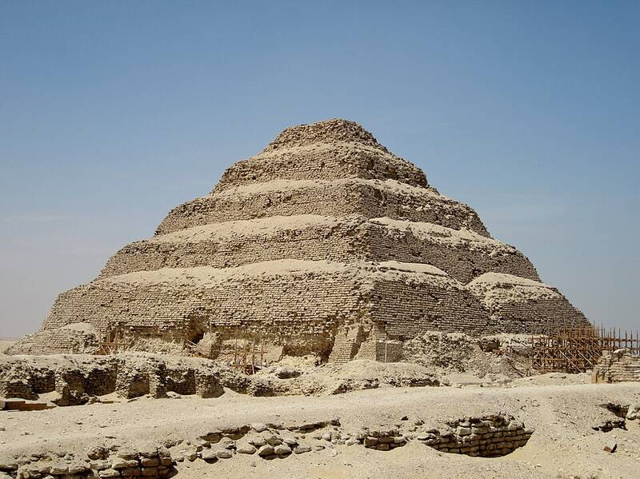

Step Pyramid of Djoser
Saqqara, Egypt, about 2670 BC

The oldest of Egypt's large pyramids, designed by the architect Imhotep for King Djoser. It is built of six stacked stone platforms. 1
Open in the interactive Watcher
Sources
- Pyramid of Djoser Wikipedia